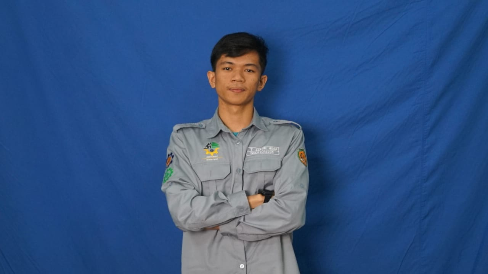
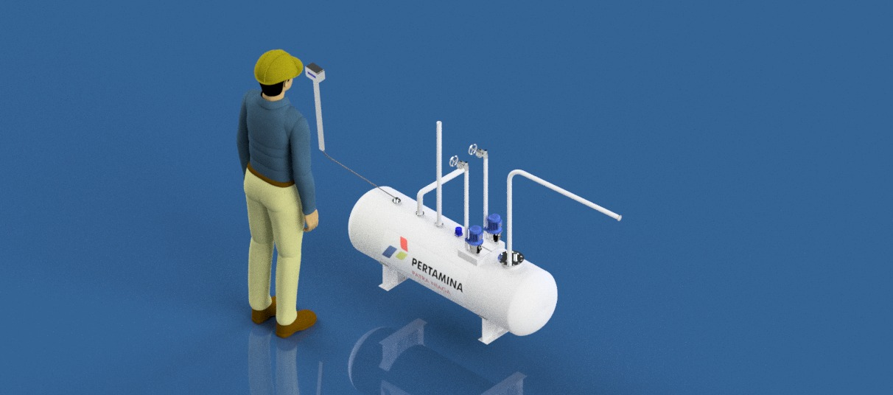

I completed a three-month internship at PT Pertamina Patra Niaga, specializing in Project Engineering. My role included the engineering design of a 20,000-liter sump tank, where I produced precise 2D and 3D CAD drawings to ensure manufacturability, safety compliance, and operational efficiency.

I am an Industrial Engineering student at Universitas Bhayangkara Jakarta Raya with handson experience in Industrial Engineering and manufacturing design. I have been directly involved in various engineering projects, including the design of a 2,000-liter oil storage sump tank at the Cikampek Fuel Terminal – PT Pertamina Patra Niaga, the design of a Trolley Coiler CC,
Cleaning Box Machine, as well as the design of hoods and ducting modifications tailored to client requirements, supported by on-site surveys as the basis for accurate and practical design solutions. In addition, I have experience in piping system installation projects,
covering clean water, wastewater, hydrant, and sprinkler systems in high-rise buildings such as apartments and hotels, as well as catwalk installations for Air Conditioning (AC) system maintenance access.I am recognized as a detail-orientedresponsible, and consistent individual, with strong teamwork skills, critical thinking abilities, and effective time management, enabling me to deliver engineering solutions aligned with client needs. I have a strong interest in Mechanical Engineering design and am proficient in using engineering design and simulation software, including AutoCAD, Autodesk Inventor, and SolidWorks, as well as in preparing Bills of Material (BOM) for products, machines, and work equipment.With high dedication and strong motivation, I am committed to continuously developing my professional career and delivering valuable contributions and optimal performance to the company
Marga Mulya, Kec. Bekasi Utara, Kota Bks, Jawa Barat 17124t Me
Industrial Engineering
Project Engineering Intern PT. Pertamina Patra Niaga
As a Project Engineering Intern at Fuel Terminal Cikampek – PT Pertamina Patra Niaga over a three-month internship, I contributed to engineering design, on-site field verification, and design coordination in support of operational facilities and ongoing engineering projects. My key responsibilities included:
During a three-month professional internship as a Site Supervisor, I was actively involved in supervising building construction activities and contributed to maintaining work quality, schedule compliance, and project safety. The scope of my responsibilities included:
Koleksi foto dokumentasi dan karya visual
Focused on mechanical engineering design and product development:
I completed a three-month internship as a Site Supervisor, actively involved in the catwalk installation project at the G Arkadia Building (22nd Floor, South Jakarta) and the clean water pipeline installation project at Graha Cempaka Mas Apartment, Tower A1. My responsibilities included on-site supervision, workforce coordination, daily project reporting, and ensuring full compliance with working drawings and technical specifications. I also contributed to material usage control and work method optimization to improve cost efficiency while maintaining construction quality and safety standards.:
I completed a three-month internship as a Project Engineering Intern, participating in engineering and manufacturing design activities, including the design of a 2,000-liter oil storage sump tank, compressor storage racks, and firefighting nozzle storage units. I was responsible for 2D and 3D technical modeling and conducted on-site field surveys to ensure design accuracy, alignment with real site conditions, operational requirements, and compliance with applicable safety standards.
Creating detailed 3D models
Realistic textures and high-quality rendering..
Animations for presentations and visual content..
Merancang konsep produk dari ide hingga visualisasi 3D untuk prototipe.

Contoh karya desain 3D untuk pengembangan produk kreatif dan fungsional.
Silakan hubungi untuk kolaborasi atau informasi lebih lanjut
Aron Tambunan
Marga Mulya, Kec. Bekasi Utara, Kota Bks, Jawa Barat
aronmicael140@gmail.com
+62 812 3456 7890